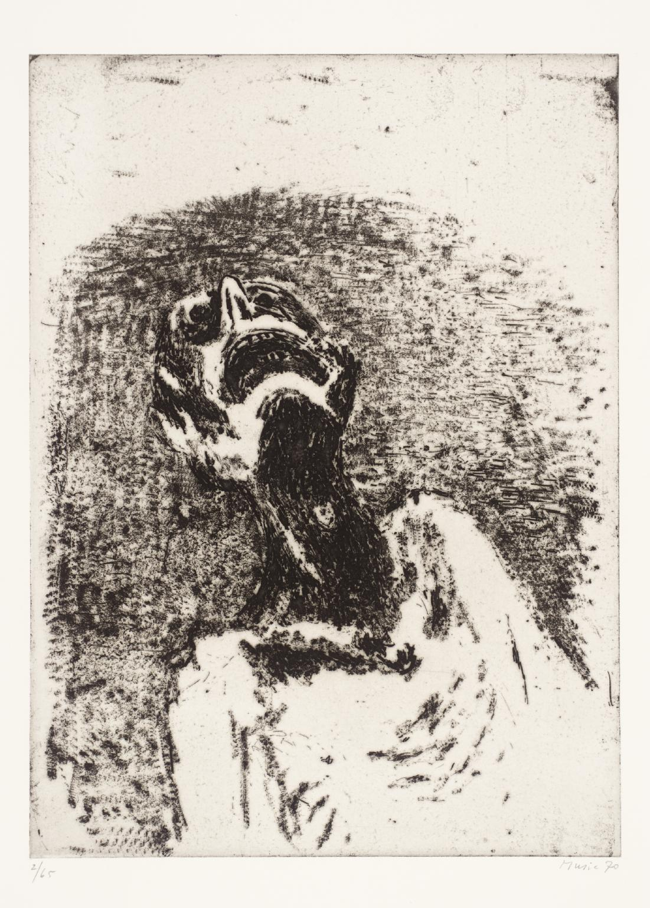

There is a kind of poetic justice in the fact that Adorno is the great survivor of the Frankfurt School, the only one whose thought retained its full actuality. Slavoj Zizek
Death is a human scandal, and should be abolished. Adorno, Letter to Thomas Mann
There was a period, roughly from the late 1970s to the early 1990s, certainly in the English-speaking world, when Frankfurt School critical theory looked to have had its day. What little notice was paid to it tended to be on the order of lip service, and it was seen as a body of theory that, while it contained many cogent and suggestive insights, was essentially limited, both by its own historical rootedness and by the severe curtailments that it appeared to apply to the possibility of radical political engagement in an era as desperately in need of engagement as ever.
The academic fashion was all for French poststructuralism, in particular deconstruction in the Derridean manner, with its eloquent hesitations, its ramifying investigations of textuality in everything from postcards and national flags to actual literary texts, and its suspension of grand narratives and inductive logic in favour of deferrals and elisions, or outright disavowals, as when Derrida himself carried over from his early reading of Heidegger the technique of placing undeconstructed remnants of the western philosophical tradition, those concepts that were now strictly considered unsayable, under erasure (sous rature), which meant having the word typeset with an emending line through it, a fastidiousness for which earlier generations had made do with inverted commas, or scare quotes. The peculiar aspect of this turn to postmodernist irony and incertitude was that, just as the Frankfurt thinkers, Adorno chief among them, were being written off for their political quiescence, everybody was signing up to an intellectual vogue that saw politics as another of the discursive networks that awaited patient unravelling, and morality as another of the generators of inflexible binary oppositions. Derrida was not without leftist commitments, as his allusive text Spectres of Marx (1993) eventually demonstrated, but never quite resolved the conundrum as to what, ultimately, the point was of deconstructing everything, still less what anybody was expected to do with the disarticulated components of something like Marxist theory once they lay before us on the dissecting table.
[…] If there is a buzzkill Adorno, there is too an ineffably cool one. If there is an Adorno who allegedly failed to see beyond the end of his culturally privileged Eurocentric nose, there is the Adorno who emerged to plain view at a March 2016 conference in Amsterdam as 'Global Adorno', a thinker for the internationalist and globalising times, whose cultural and political critiques, while eschewing any specifically prescriptive tenor, nonetheless speak eloquently to the moods and conflicts of our own hour. Despite the chants of the desk-thumpers in 1969, Adorno is not after all dead, but has risen to the historical moment to cast an unwavering strigine gaze over the landscape of a dawning third millennium, in which practically nothing surprises him.
[…] Adorno remained interested in what was then more generally known as moral philosophy, as witness the 1963 lecture course, 'Problems of Moral Philosophy', which seems to have portended a book-length study that would have followed the Aesthetic Theory. IT is true, as is well known, that Adorno exhorts post-war societies to a new categorical imperative, the obligation to ensure that what happened at Auschwitz should never be allowed to recur. This imperative would involve not simply the abolition of concentration camps, but the vigilant refusal of all habits of mind out of which the germ of Auschwitz thinking might propagate.
[…] If there is nothing like a micro-ethics, with its thought experiments and Aesopian paradigms, in Adorno, neither is there anything like a plan for living well. There is no right life amid the wrong, as the adage from the Minima Moralia had taught, and no indication on what are today seen as ethical guideposts for guilt-free living. Instead, there is what Negative Dialectics calls a context of universal guilt, in which the subjective reason that might transcendentally decide ethical questions in the alienated conditions of each individual's life is itself a product of alienation. To constitute himself as a person in the ethical sense, the individual subject would have to be distinguished from his mere existence, but not at the expense of his subsumption into an identity. Identities, in the sense intended today by identity politics, in which each interest group holds out for its own maximum advantage in unfavourable conditions, in the interest primarily of self-preservation, are what stop people from being individuals. Their individuality, indeed their very humanity, is to be found in their nonidentity with both social and political normativity. 'The subject is the lie,' Adorno writes, 'because for the sake of its own absolute rule it will deny its own objective definitions. Only he who would refrain from such lies – who would have used his own strength, which he owes to identity, to cast off the façade of identity – would truly be a subject'.
[…] Despite its dilapidation in the present age, the individual remains the only hope for setting limits to the coercive force of the social collectivity. Somehow a way must be found to preserve its traces of independence, without surrendering it to the nullification of being nothing more than an abstract principle, and without again raising the standard of acquisitive bourgeois selfishness on its ground. 'If today the trace of humanity seems to persist only in the individual in his decline,' says Adorno, 'it admonishes us to make an end of the fatality that individualises people, only to break them completely in their isolation. The saving principle is now preserved in its antithesis alone'.22 That last sentence is a classic Adornian dialectical move. The saving principle, which refers jointly to the principle of self-preservation and to the Gospel text he has cited a few lines earlier in the theological reference – 'He that loses his life shall save it' – can only be realised by abandoning the competitive urge to survive at the expense of all others. No longer is the individual the crowning achievement of the bourgeois political economy, but is instead its battered remnant, the product not of the nurturing of every last man, woman and child, but of the dividing and ruling that makes the exploitative system run. Only by working against his own preservation can the individual hope to preserve his own true individuality.
[…] In the twelfth and final metaphysical meditation from the Negative Dialectics, Adorno argues that all thinking proceeds from a felt need. It does not have to be wishful thinking in the sense of trying to will something into existence by merely hoping for it, for all that hope must spring eternal. There is a compulsiveness to thought, the need to know why and what and how, which enlightenment conceived only under the sign of demythologisation, stripping away the unknowns by explanation, until the metaphysical, what could not be known, Kant's thing-in-itself, was not the transcendent kernel but the discardable husk. The mistake Kant made, Adorno claims, is that instead of letting the thing-in-itself stand as the irreducible core of what was heterogeneous to rational thought, it became the principle by which rational thought anthropomorphised everything to conform to itself. This is why the motor force of negative dialectics is not to establish something positive by negating the negations, but to preserve the negative element as what is not like thought itself. It does not, however, imagine itself to be applying its procedure transcendentally, in the Kantian style, but immanently.
[…] 'Always the same world,' sighed Walter Benjamin in the midst of one of his experiments with hashish, before adding the self-rallying qualifier, 'yet one has patience'. “Adorno's lifetime of theoretical work assuredly has that, but it also lights the way towards a possible liberation, in which a world that can only offer the ruthless demand for patience would pass away.
Source